Kronos i Rea
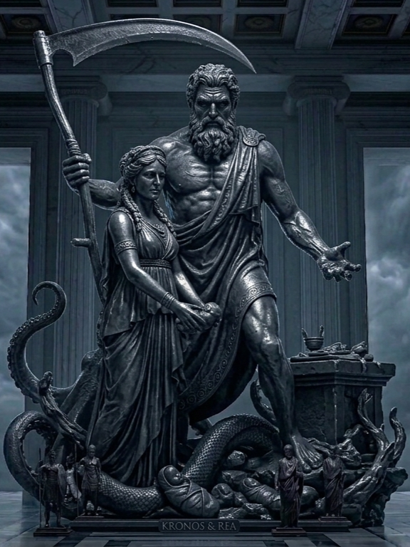
Zanim na szczytach góry Olimp zasiedli bogowie, których znamy, światem władał tytan Kronos. Był to czas surowych rządów i strachu. Kronos, po przejęciu władzy od swojego ojca Uranosa, był dręczony przepowiednią, która mówiła, że jeden z jego własnych synów odbierze mu tron, tak jak on sam uczynił to wcześniej. Aby zapobiec spełnieniu się tego fatum, Kronos posunął się do niewyobrażalnej okrucieństwa – każde dziecko, które rodziła mu jego żona, Rea, było przez niego natychmiast pożerane. Dopiero narodziny Zeusa przerwały ten tragiczny cykl. Rea, zrozpaczona stratą pozostałego potomstwa, ukryła niemowlę na Krecie, a mężowi podała kamień owinięty w pieluszki. Kronos, nieświadomy podstępu, połknął kamień, co dało Zeusowi czas na dorastanie. Gdy Zeus osiągnął pełnię sił, zmusił ojca do „oddania” rodzeństwa, co zapoczątkowało wielką wojnę - Tytanomachię. Po dziesięciu latach krwawych zmagań, tytani zostali strąceni do Tartaru, a na ich miejsce wstąpili nowi bogowie, ustanawiając nowy porządek świata.
WIELKA TRZYNASTKA
Zeus
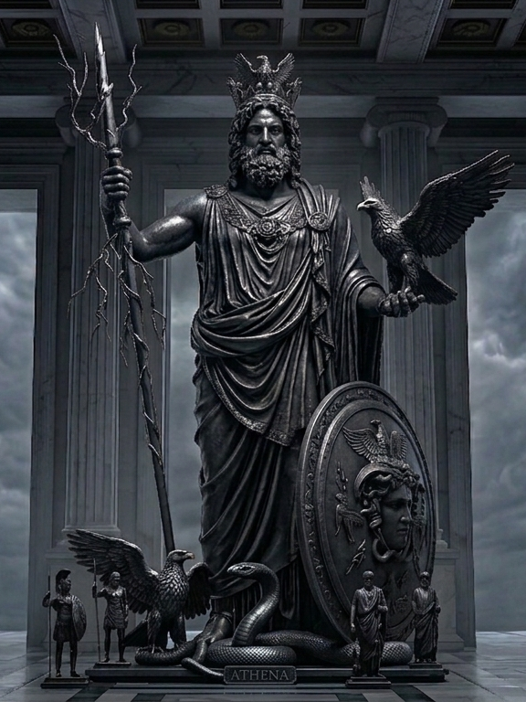
To najważniejszy bóg grecki władający niebem, zjawiskami pogodowymi, piorunami oraz sprawiedliwością, który sprawował władzę nad światem z Olimpu. Urodził się jako syn tytanów Kronosa i Rei, a przetrwał dzięki matce, która ukryła go na Krecie przed pożarciem przez ojca, obawiającego się utraty tronu. Gdy dorósł, zmusił Kronosa do zwrócenia rodzeństwa, a następnie wygrał wielką wojnę z tytanami, co pozwoliło mu przejąć absolutną władzę. Grecy darzyli go ogromnym respektem zmieszanym z lękiem, ponieważ wierzyli, że to on ciska piorunami i kontroluje losy ludzkie, dlatego modlono się do niego o deszcz, urodzaj oraz w sytuacjach wymagających boskiej sprawiedliwości. Nigdy się z niego nie śmiano, gdyż był personifikacją nienaruszalnego autorytetu, choć jego życie prywatne było niezwykle burzliwe przez liczne romanse z boginiami, nimfami oraz śmiertelniczkami, co rodziło wiele konfliktów z zazdrosną żoną Herą. Na Olimpie pełnił rolę surowego ojca, który musiał nieustannie łagodzić spory między innymi bogami i egzekwować własną wolę. Jego kult był powszechny, a świątynie budowano w wielu greckich miastach, przy czym najważniejszym centrum kultu była Olimpia, gdzie wzniesiono monumentalny posąg ze złota i kości słoniowej, uważany za jeden z siedmiu cudów starożytnego świata.
Posejdon
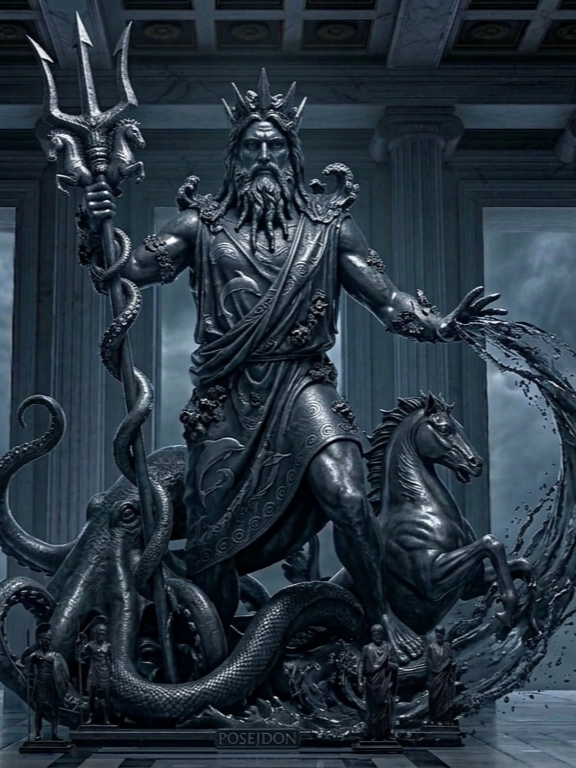
Posejdon to potężny bóg mórz, trzęsień ziemi i źródeł, który w greckim panteonie zajmował miejsce zaraz obok swojego brata, Zeusa. Po zwycięskiej wojnie z tytanami i podziale świata między rodzeństwo, to właśnie jemu przypadło we władanie bezkresne morze, co czyniło go postacią kluczową dla greckiej cywilizacji, silnie uzależnionej od żeglugi i handlu. Grecy żywili wobec niego ogromny respekt połączony z autentycznym strachem, ponieważ wierzyli, że jako władca głębin potrafi wywoływać niszczycielskie sztormy, a uderzając swoim trójzębem w ziemię – powodować gwałtowne trzęsienia gruntu. Z tego powodu marynarze i mieszkańcy nadbrzeżnych miast składali mu liczne ofiary, prosząc o spokojne wody i bezpieczne powroty do domu, a ignorowanie go uważano za skrajnie niebezpieczne. Podobnie jak Zeus, Posejdon był postacią bardzo emocjonalną i mściwą, a jego życie było pełne licznych romansów z nimfami i śmiertelniczkami, z których rodziły się często potężne lub niezwykłe istoty. Choć nie był tak wszechwładny jak Zeus, jego pozycja na Olimpie była niezwykle silna, a inne bóstwa traktowały go z dużym dystansem, wiedząc, jak łatwo wpadał w gniew. Świątynie Posejdona budowano zazwyczaj na przylądkach i w portach, z których najbardziej ikonicznym przykładem jest położone na urwistym klifie sanktuarium w Sunion, skąd bóg miał czuwać nad żeglarzami przemierzającymi morze.
Hades
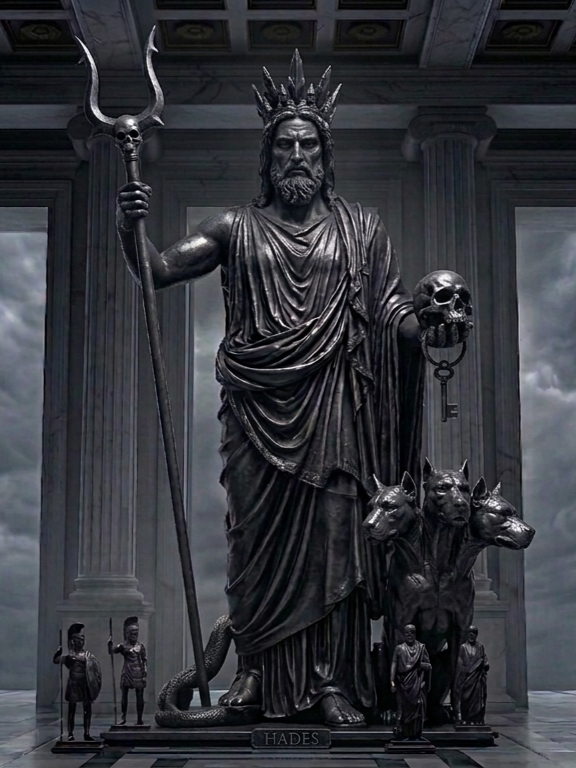
Hades to władca podziemnego świata zmarłych, który stał się jego panem po podziale świata między trzech braci: Zeusa, Posejdona i siebie. Choć był jednym z najważniejszych bogów, rzadko opuszczał swoje mroczne królestwo, dlatego nie brał czynnego udziału w sporach olimpijczyków i rzadko pojawiał się na samym Olimpie. Grecy traktowali go z ogromnym szacunkiem, ale też głębokim lękiem, starając się unikać wymawiania jego imienia, by nie przywoływać śmierci. Często określano go przydomkiem "Ten, który przyjmuje wielu", co miało przebłagać boga i zapewnić spokój duszom zmarłych. W przeciwieństwie do swoich braci, Hades był postacią ponurą i sprawiedliwą w swoim rygoryzmie, a jego najbardziej znanym mitem jest porwanie Persefony, z którą stworzył trwały, choć niezbyt szczęśliwy związek. Nie budowano mu zbyt wielu świątyń w miastach, ponieważ wierzono, że składanie mu ofiar w miejscach życia przynosi pecha, dlatego najczęściej czczono go przy wejściach do jaskiń lub rozpadlin ziemnych uważanych za przejścia do świata podziemnego. Był strażnikiem skarbów ukrytych w ziemi, co z czasem uczyniło go w oczach Greków również symbolem bogactwa, jednak jego główną rolą pozostawało pilnowanie, aby nikt ze świata zmarłych nie mógł wrócić do świata żywych.
Atena
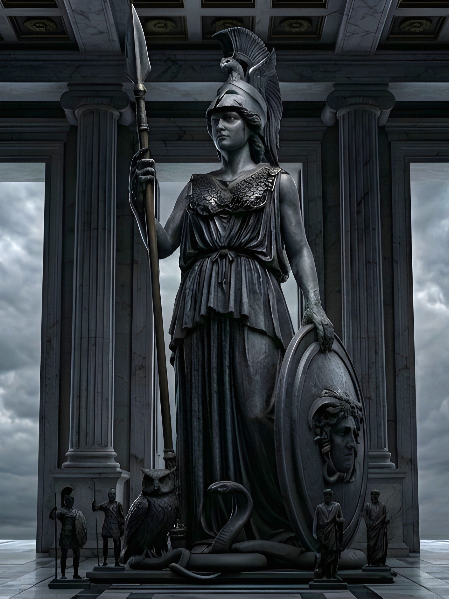
Atena to jedna z najważniejszych bogiń w greckim panteonie, patronująca mądrości, sprawiedliwej wojnie, sztuce oraz rzemiosłu. Według mitów narodziła się w niezwykły sposób, wyskakując w pełnej zbroi prosto z głowy swojego ojca, Zeusa, co od razu podkreślało jej unikalną pozycję jako ucieleśnienia boskiego intelektu i siły. Grecy darzyli ją ogromnym szacunkiem, uważając ją za opiekunkę miast, zwłaszcza Aten, którym dała swoje imię i obdarzyła je drzewem oliwnym, wygrywając tym samym rywalizację z Posejdonem o bycie patronką tego polis. W przeciwieństwie do Aresa, który reprezentował bezmyślną agresję, Atena symbolizowała strategię, opanowanie i logiczne myślenie, dlatego wierzyli w nią nie tylko żołnierze potrzebujący zwycięstwa w bitwie, ale także artyści i rzemieślnicy szukający natchnienia. Mimo że była boginią wojny, ceniła pokój i zawsze wspierała bohaterów, którzy wykazali się sprytem, takich jak Odyseusz. W jej relacjach z innymi bogami dominowała powaga i inteligencja, dzięki którym potrafiła wyjść zwycięsko z niemal każdego sporu. Jej kult był niezwykle silny, a najważniejszą świątynią był Partenon na ateńskim Akropolu, który do dzisiaj pozostaje jednym z najbardziej znanych zabytków architektury na świecie. Jako bogini dziewicza nie miała męża ani dzieci, poświęcając się całkowicie swoim obowiązkom oraz ochronie wyznawców, co czyniło ją postacią niezwykle szanowaną i podziwianą w całym świecie antycznym.
Hera
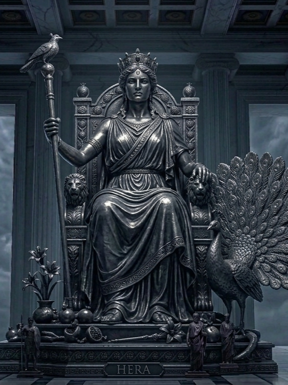
Hera to królowa Olimpu, żona Zeusa oraz najważniejsza bogini w greckim panteonie, patronująca małżeństwu, rodzinie i kobiecości. Jako córka Kronosa i Rei, po zwycięstwie nad tytanami stała się centralną postacią boskiego dworu, choć jej pozycja była niezwykle wymagająca przez wieczną niewierność męża. Grecy darzyli ją ogromnym szacunkiem, widząc w niej surową opiekunkę świętości związku małżeńskiego, której przysięgi były nienaruszalne. Jej charakter był trudny i pamiętliwy, co objawiało się w bezlitosnym prześladowaniu kochanek Zeusa oraz ich nieślubnego potomstwa. Hera nie była jednak tylko zazdrosną żoną; traktowano ją jako potężną władczynię, która dysponowała wielką mocą i potrafiła skutecznie wpływać na decyzje samego Zeusa. Wierzono, że ma wpływ na cykl życia kobiet i narodziny dzieci, dlatego modlono się do niej o pomyślność w domowym ognisku i opiekę nad rodziną. Świątynie ku jej czci powstawały w wielu greckich miastach, a najbardziej znane i jedne z najstarszych sanktuariów znajdowały się w Olimpii, Argos oraz na wyspie Samos, gdzie organizowano dla niej huczne uroczystości. W sztuce przedstawiano ją zazwyczaj jako majestatyczną, dumną kobietę w koronie, która emanowała królewskim spokojem i budziła respekt w całym świecie bogów.
Apollo
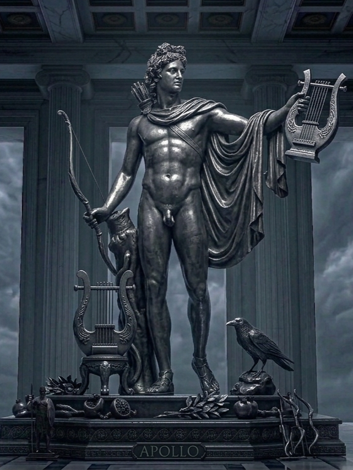
Apollo to jeden z najbardziej wszechstronnych i szanowanych bogów olimpijskich, syn Zeusa i Leto oraz brat bliźniak Artemidy. Jest bóstwem światła, muzyki, poezji, uzdrawiania, wróżbiarstwa, a także łucznictwa i patronem pasterzy. Jego kult był niezwykle silny i powszechny, ponieważ postrzegano go jako boga harmonii, piękna i jasności, który wprowadzał porządek w świecie ludzi i bogów. Grecy darzyli go ogromnym respektem, zwłaszcza w sprawach związanych z przyszłością, ponieważ to on był właścicielem najsłynniejszej wyroczni w Delfach, gdzie poprzez Pytię przekazywał wolę bogów i przepowiednie dotyczące polityki czy życia osobistego. Apollo nie był bóstwem mściwym jak Hera czy Posejdon, ale bywał surowy i potrafił zsyłać zarazę, gdy czuł się znieważony, co czyniło go postacią budzącą lęk, przed którym należało się mieć na baczności. W relacjach z innymi bogami często pełnił rolę mediatora i artysty, a jego obecność na Olimpie zawsze kojarzyła się z kulturą i wyższymi wartościami. Świątynie poświęcone Apollo znajdowały się w niemal każdym greckim mieście, a największą z nich był zespół sakralny w Delfach, będący centrum religijnym całego świata greckiego. W sztuce przedstawiano go zazwyczaj jako idealnie zbudowanego, młodego mężczyznę z lirą lub łukiem, co stało się wzorcem męskiego piękna na stulecia.
Ares
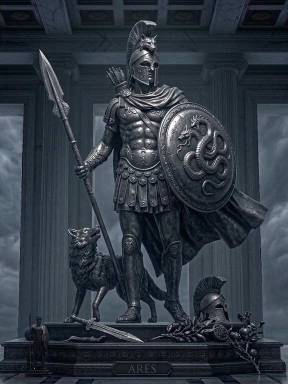
Ares to bóg wojny, syn Zeusa i Hery, który w przeciwieństwie do swojej siostry Ateny, nie ucieleśniał strategicznej walki, lecz jej brutalną stronę, żądzę krwi, chaos i zniszczenie. Grecy darzyli go mieszanymi uczuciami, bo choć był potężny i nieustraszony na polu bitwy, to przez swoją porywczość i skłonność do wywoływania konfliktów nie cieszył się sympatią ani wśród ludzi, ani nawet wśród innych bogów. Często był postrzegany jako postać destrukcyjna i nieprzewidywalna, której działania przynosiły głównie cierpienie i śmierć, co sprawiało, że modlono się do niego głównie po to, by odwrócił gniew od miasta lub zapewnił przewagę w najcięższych starciach. Jego relacje z innymi olimpijczykami były napięte, często wdawał się w kłótnie, a jego najsłynniejszym romansem była burzliwa relacja z Afrodytą, która stała się przedmiotem wielu mitów i kpin ze strony innych bogów. Choć posiadał świątynie, nie były one tak powszechne ani tak wystawne jak w przypadku Zeusa czy Ateny, co wynikało z faktu, że Grecy woleli raczej przebłagać go w chwilach potrzeby niż wielbić jako ideał. W sztuce przedstawiano go zazwyczaj jako silnego, uzbrojonego wojownika w pełnym rynsztunku, który emanował agresją i gotowością do walki, co czyniło go postacią budzącą respekt, lecz zarazem dystans i niepokój w każdym, kto stanął na jego drodze.
Afrodyta
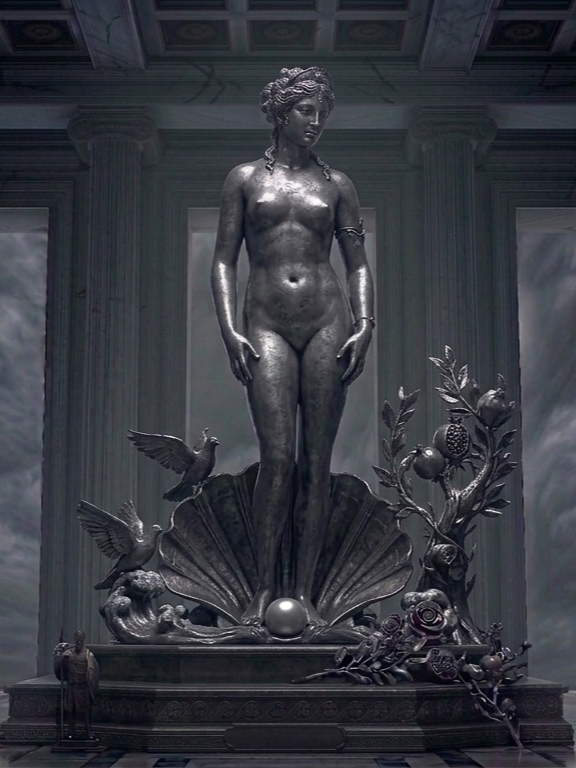
Afrodyta to bogini miłości, piękna, pożądania oraz płodności, która według mitów wyłoniła się z morskiej piany u wybrzeży Cypru, co czyniło ją jedną z najbardziej fascynujących postaci olimpijskich. Grecy darzyli ją ogromnym szacunkiem i uwielbieniem, ponieważ wierzyli, że to ona włada siłami, które łączą ludzi i bogów, a jej wpływ był odczuwalny w każdej sferze życia, od małżeństw po skryte namiętności. Choć nie była wojowniczką, jej moc była często silniejsza niż pioruny Zeusa, gdyż potrafiła zawładnąć umysłem i sercem każdego, kto znalazł się w zasięgu jej czaru. Jej relacje z innymi bogami były skomplikowane i pełne emocji – była żoną pracowitego Hefajstosa, ale jej serce należało przede wszystkim do Aresa, co stanowiło częsty temat greckich opowieści. Grecy nie bali się jej w taki sposób, w jaki lękali się Aresa czy Hadesa, ale podchodzili do niej z dużą ostrożnością, wiedząc, że jej gniew lub kaprysy mogą sprowadzić na nich nieszczęśliwą miłość albo życiową katastrofę. Świątynie ku jej czci były miejscami bardzo popularnymi, szczególnie na Cyprze i wyspie Kithira, gdzie oddawano jej cześć jako opiekunce piękna i kobiecości. W sztuce przedstawiano ją zazwyczaj jako kobietę o zniewalającej urodzie, często w otoczeniu kwiatów, ptaków czy własnego syna Erosa, co czyniło ją ikoną wdzięku i symbolem, do którego dążyła każda grecka kobieta.
Artemida
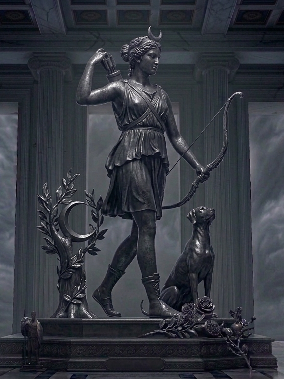
Artemida to bogini łowów, dzikiej przyrody, lasów, gór i księżyca, a także siostra bliźniaczka Apollina. Jako córka Zeusa i Leto od najmłodszych lat wykazywała się niezależnością, prosząc ojca o wieczne dziewictwo i życie z dala od męskiego towarzystwa, co czyniło ją postacią niezwykle suwerenną w świecie zdominowanym przez bogów. Grecy darzyli ją ogromnym respektem, zwłaszcza ludzie mieszkający na wsiach, myśliwi i kobiety w połogu, wierząc, że jako władczyni dzikich zwierząt potrafi zarówno zapewniać obfitość łowów, jak i karać za bezczeszczenie natury. Była boginią nieprzejednaną i bardzo pamiętliwą, dlatego budziła szczery lęk, gdyż każde naruszenie jej terytorium czy brak szacunku wobec zwierząt kończył się surową karą. Jej relacje z innymi olimpijczykami były nacechowane lojalnością wobec rodziny, choć rzadko wtrącała się w polityczne spory bogów, preferując przebywanie w leśnych gęstwinach w otoczeniu swoich nimf. Świątynie ku jej czci powstawały często w miejscach ustronnych, blisko źródeł czy w puszczach, a jedną z najsłynniejszych była monumentalna świątynia w Efezie, uważana za jeden z siedmiu cudów starożytnego świata. W sztuce przedstawiano ją jako zwinna łowczynię z łukiem i kołczanem, zazwyczaj w towarzystwie jelenia lub chartów, co podkreślało jej więź z naturą i nieodłączną wolność.
Hefajstos
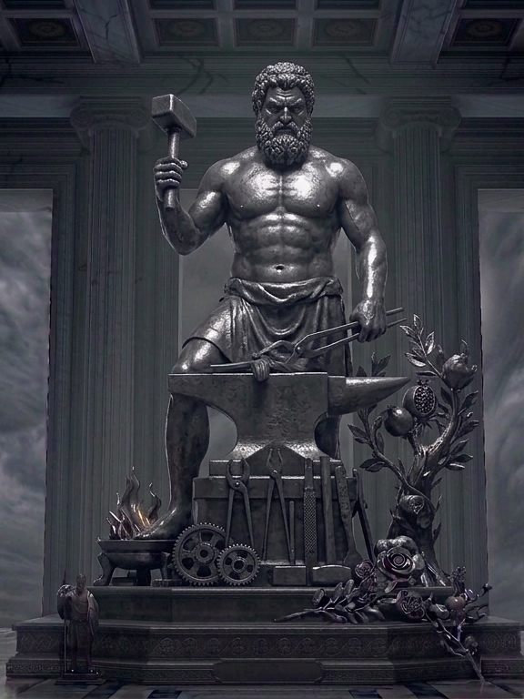
Hefajstos to bóg ognia, kowalstwa, rzemiosła oraz architektury, syn Zeusa i Hery, który wyróżniał się na tle innych bogów swoim fizycznym niedoskonałościami oraz niezwykłą pracowitością. Według mitów został strącony z Olimpu przez matkę, która wstydziła się jego kalectwa, przez co stał się jedynym bogiem, który ciężko pracował własnymi rękami w swojej podziemnej kuźni. Grecy darzyli go szacunkiem jako patrona wszystkich rzemieślników, kowali i artystów, doceniając jego niezwykły talent do tworzenia mistrzowskich dzieł, w tym boskiej broni, zbroi czy nawet mechanicznych automatów. W przeciwieństwie do innych bogów, nie był postacią budzącą lęk poprzez agresję, lecz raczej podziw za swoją kreatywność i wytrwałość w obliczu przeciwności losu. Jego życie prywatne było naznaczone zawodem, ponieważ choć poślubił piękną Afrodytę, ta wielokrotnie go zdradzała, co czyniło go postacią tragiczną, budzącą współczucie i sympatię w oczach wiernych. Relacje z resztą Olimpu miał poprawne, choć często czuł się outsiderem, będąc jedynym pracującym bogiem pośród wiecznie ucztujących mieszkańców góry. Świątynie ku jej czci budowano zazwyczaj na obrzeżach miast, blisko dzielnic rzemieślniczych, a najbardziej znanym przykładem jest bardzo dobrze zachowana świątynia Hefajstosa w Atenach, położona w pobliżu Agory. W sztuce przedstawiano go zazwyczaj jako krępego mężczyznę przy pracy, trzymającego młot i kowadło, co czyniło go symbolem ludzkiej pomysłowości i szacunku do rzetelnej pracy.
Hermes
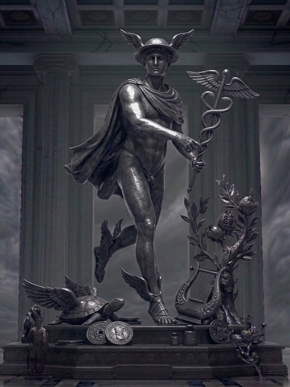
Hermes to chyba najbardziej wielowymiarowa postać w całym panteonie, syn Zeusa i Mai, znany przede wszystkim jako posłaniec bogów. Jako jedyny miał prawo swobodnie poruszać się między trzema światami: Olimpem, ziemią śmiertelników oraz podziemnym królestwem Hadesa, co czyniło go niezbędnym pośrednikiem w boskich sprawach. Grecy szanowali go za spryt, inteligencję i zaradność, widząc w nim patrona kupców, podróżników, a nawet złodziei, bo w mitach słynął z tego, że już jako niemowlę potrafił wykradać bydło swojemu bratu, Apollo. Nie był postacią budzącą grozę, raczej sympatią i podziwem za to, jak szybko potrafił rozwiązywać problemy, używając słowa albo własnego sprytu zamiast brutalnej siły. W jego relacjach z innymi bogami dominowała pewna swoboda – Zeus ufał mu bezgranicznie, bo Hermes jako jedyny zawsze dostarczał wiadomości na czas. Świątynie poświęcone Hermesowi stawiano zazwyczaj na skrzyżowaniach dróg, w portach czy na placach targowych, ponieważ wierzono, że czuwa nad każdym ruchem ludzi w codziennym życiu. W sztuce rozpoznasz go bez trudu po charakterystycznych atrybutach: sandałach ze skrzydełkami, podróżnym kapeluszu oraz kaduceuszu, czyli lasce oplecionej wężami, która symbolizowała jego pokojową misję.
Hestia
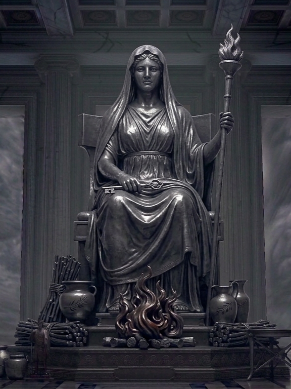
Hestia to najspokojniejsza i najbardziej dyskretna postać na całym Olimpie, córka Kronosa i Rei, która jako pierwsza z rodzeństwa została połknięta przez ojca, a potem przez niego wypluta. Jest boginią ogniska domowego, poświęcenia i rodzinnego ciepła, a jej obecność była fundamentem życia każdego greckiego domu. W przeciwieństwie do reszty bogów, Hestia prawie w ogóle nie pojawia się w spektakularnych czy burzliwych mitach, ponieważ unikała sporów i rywalizacji o władzę. Grecy szanowali ją za to, że symbolizowała stabilność, bezpieczeństwo i trwałość rodziny. W każdym greckim domu płonął ogień poświęcony Hestii, a pierwsze i ostatnie ofiary składane podczas uczt należały właśnie do niej. Złożyła ona przed Zeusem przysięgę wiecznego dziewictwa, co uczyniło ją symbolem czystości i skromności. Choć nie miała tak okazałych świątyń jak Atena czy Apollo, jej kult był najbardziej osobisty i intymny, bo wyznawcy czcili ją bezpośrednio w swoich domach. W sztuce przedstawiano ją zazwyczaj jako kobietę z zasłoniętą głową, często siedzącą w pobliżu ogniska, co idealnie oddawało jej spokojną i opiekuńczą naturę.
Dionizos
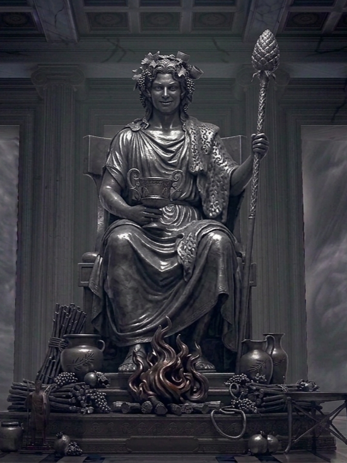
Dionizos to bóg wina, winorośli, ekstazy i zabawy, który jako jedyny spośród olimpijczyków miał śmiertelną matkę, księżniczkę Semele. To czyniło go postacią wyjątkową, bo łączył w sobie świat bogów ze światem ludzi, co często budziło zazdrość i niechęć u pozostałych mieszkańców Olimpu. Grecy mieli do niego bardzo specyficzny stosunek – z jednej strony go uwielbiali, bo przynosił radość, ucztowanie i wyzwolenie z codziennych trosk, ale z drugiej strony budził w nich głęboki lęk. Wierzyli, że jako bóg szaleństwa potrafi doprowadzić człowieka do utraty zmysłów, jeśli tylko ten przesadzi z piciem lub okaże brak szacunku dla jego obrzędów. Jego kult był zupełnie inny od pozostałych bóstw, bo polegał na emocjonalnym uniesieniu, tańcach i radosnym pijaństwie, co dla konserwatywnych Greków było czymś nieoczywistym. W sztuce przedstawiano go zazwyczaj jako młodego, długowłosego mężczyznę z wieńcem bluszczu lub winorośli na głowie, często w otoczeniu satyrów i bachantek. Świątynie Dionizosa tętniły życiem głównie podczas wielkich świąt, czyli Dionizji, które były kolebką greckiego teatru – to właśnie tam wystawiano pierwsze sztuki, które do dzisiaj inspirują artystów.
POZOSTALI BOGOWIE
Persefona
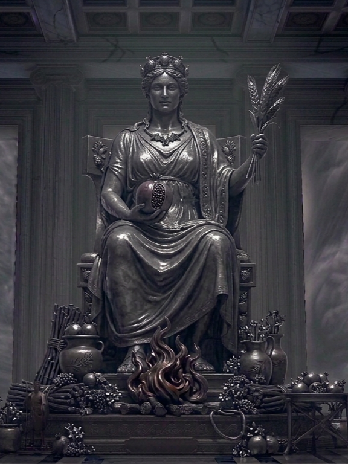
Persefona to bogini wiosny, wzrostu roślin, a zarazem potężna władczyni podziemi, córka Zeusa i Demeter. Jej postać jest wyjątkowa, ponieważ żyje między dwoma skrajnie różnymi światami, co czyni ją jedyną w swoim rodzaju wśród olimpijskich bóstw. Grecy darzyli ją wielkim szacunkiem, łącząc jej obecność z naturalnym cyklem przyrody – kiedy wracała z zaświatów do matki, ziemia rozkwitała, a kiedy do nich wracała, natura zasypiała. Nie była postacią jednoznaczną; z jednej strony utożsamiano ją z niewinnością i świeżością wiosennych kwiatów, z drugiej strony budziła lęk jako chłodna i nieustępliwa królowa świata zmarłych, która dzieli tron z Hadesem. W przeciwieństwie do wielu innych bogiń, Persefona nie szukała konfliktów, lecz jej historia wywołała jedną z największych awantur na Olimpie, gdy Demeter w rozpaczy po jej porwaniu niemal doprowadziła świat do głodu. Relacje z innymi bogami miała dość specyficzne, będąc jednocześnie córką Zeusa i małżonką Hadesa, co stawiało ją w samym centrum boskich zależności. Świątynie poświęcone Persefonie często łączono z miejscami kultu jej matki, gdzie odprawiano tajemnicze misteria mające zapewnić ludziom lepszy los po śmierci. W sztuce przedstawiano ją jako piękną, młodą kobietę, zazwyczaj z naręczem kwiatów lub kłosami zboża, co symbolizowało jej panowanie nad życiem, choć w scenach podziemnych zyskiwała surowy, królewski wyraz twarzy.
Helios
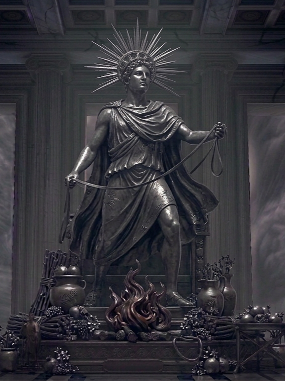
Helios to bóg słońca, utożsamiany z samym promiennym dyskiem słonecznym, który codziennie przemierza nieboskłon na swoim złotym rydwanie. Jest synem tytanów Hyperiona i Tei, co stawia go w grupie starszych bóstw, które wciąż pełniły kluczową rolę w greckim świecie. Grecy darzyli go wielkim respektem, bo był bogiem, który wszystko widzi – nic nie mogło się przed nim ukryć, dlatego często wzywano go jako świadka w przysięgach czy w sprawach, gdzie potrzebna była sprawiedliwość. Nie był postacią budzącą lęk poprzez agresję, lecz raczej budził podziw i pewnego rodzaju dystans, ponieważ jego moc była wręcz niebotyczna. Jego relacje z resztą Olimpu były dość specyficzne, bo jako bóstwo astralne żył nieco na uboczu, skupiony na swojej codziennej, żmudnej pracy, która wyznaczała rytm życia ludzi i bogów. Świątynie ku jego czci nie były aż tak powszechne jak te Zeusa, ale jego kult był bardzo silny na wyspie Rodos, gdzie wzniesiono słynnego Kolosa Rodyjskiego, czyli ogromny posąg mający go upamiętnić. W sztuce przedstawiano go zazwyczaj jako młodego, promieniejącego mężczyznę z promienistą koroną na głowie, często powożącego rydwanem zaprzężonym w cztery ogniste rumaki, co czyniło go symbolem światła, czujności i niezmienności naturalnego porządku świata.
Eros
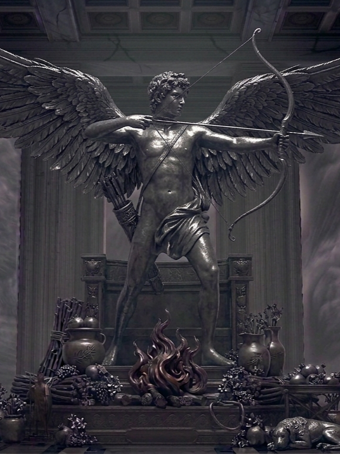
Eros to bóg miłości, pożądania i namiętności, często przedstawiany jako ten, który swoimi strzałami potrafi sprawić, że zakochają się w sobie nawet najbardziej uparci bogowie czy śmiertelnicy. W mitologii jego pochodzenie bywa różnie tłumaczone – według niektórych wersji był synem Afrodyty i Aresa, według innych istniał od samego początku jako jedna z pierwotnych sił, które nadały światu życie. Grecy patrzyli na niego z mieszanką podziwu i trwogi, bo wierzyli, że jego moc jest nieprzewidywalna i może przynieść zarówno ogromne szczęście, jak i wielkie tragedie, jeśli strzała trafi w niewłaściwą osobę. Nie był bogiem, któremu budowało się potężne świątynie w każdym mieście, bo Eros to siła czująca, która objawiała się bezpośrednio w ludzkich sercach, a nie w kamiennych budowlach. Jego relacje z innymi bogami opierały się na tym, że nawet Zeus musiał się z nim liczyć, bo nikt nie był odporny na jego wpływ. W sztuce najpierw przedstawiano go jako przystojnego młodzieńca, a później jako małego, psotnego chłopca z łukiem i kołczanem pełnym strzał, co stało się ikonicznym symbolem zakochania, który znamy do dzisiaj.